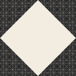
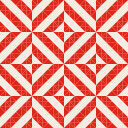

Werkzeuge
Die interaktiven Werkzeuge von La Livrée d'Hermès — komponieren, visualisieren, drucken, verschlüsseln. Seiten mit dem Zusatz „(Seite auf Französisch)“ sind noch nicht übersetzt.
Andere Sprachen: Français · English · Español · ไทย · 简体中文 · Русский · Português · हिन्दी · Italiano · 日本語

Ein Muster erstellen
Setzen Sie Ihre eigenen Textilmuster aus den 60 Bildern des Yijing zusammen. (Seite auf Französisch)
Magic quadricolore
Die 64 Hexagramm-Muster, anpassbar und in hoher Auflösung herunterladbar. (Seite auf Französisch)
Dreifarbige Galerie
Vereinheitlichte Muster, durch Mischen von Tönen erzeugt — wählen Sie ein Motiv, um seine Parkettierung zu sehen. (Seite auf Französisch)
Zweifarbige Galerie
142 zweifarbige Muster, von den Achsen erzeugt und auf dem Würfel geschlossen — Lesekörnung, Parkettierung, Export. (Seite auf Französisch)
SVG-Muster
Laden Sie die Druckschichten in 4 Kategorien von Strichkombinationen als SVG herunter. (Seite auf Französisch)
Zweifarbige Muster
Setzen Sie eine 12×12-Zelle zusammen, sechs Ebenen, jede mit eigener Familie und Tönung. (Seite auf Französisch)
Zweifarbige Muster v2
Die zweite Diagonalteilung (YA/AY), Vokabular und Halbverschiebungsstatus — neben dem Werkzeug v1. (Seite auf Französisch)

Kymatik
Die Parkettierung, deren Raumfrequenz dem Klang, den Sie erzeugen, am nächsten kommt. (Seite auf Französisch)
Hintergrundbild
Textile Hintergrundbilder im Vollbild, klangreaktiv oder im meditativen Modus mit einstellbarem Tempo. (Seite auf Französisch)
Die eigene Musik sehen
Wählen Sie ein Stück, eine Datei oder das Mikrofon: Die Seite sucht das Muster von La Livrée d’Hermès, dessen Spektrum dem des Klangs am nächsten kommt.
Animationsgalerie
Die Animationen der Hintergrundkollektionen in sechs Gruppen: ansehen, in der Vorschau prüfen und als MP4 herunterladen.
360 Schichten
Ziehen Sie druckfertige Schichten und laden Sie sie herunter. (Seite auf Französisch)
Kodierer
Geometrische steganographische Kodierung mit doppeltem Referenten, Henkelkreuz und Jacquard. (Seite auf Französisch)